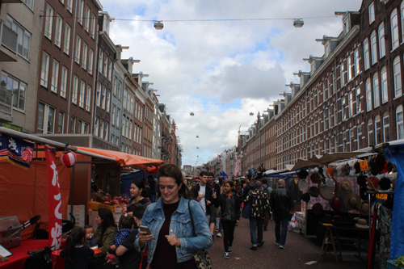
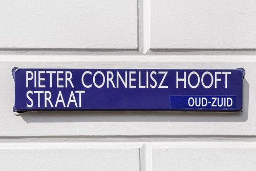

SHOPPING IN ZUID
Where to do your shopping
There are three main places where you can do your shopping in Amsterdam Zuid:
1. Alber Cuyp Markt: situated in De Pijp area, it is the most famous market of Amsterdam. Everything you need, and don’t need, could be found in this Dutch typical market. From vegetable to clothes and bags. Literally everything!
2. Pieter Cornelisz Hooftstraat: the wealthiest shopping area in Amsterdam - and one of the word - is situated right near the Museumplain and Vondelpark. Designed for those who loves high level and luxury shopping! From Chanel to Tommy Highflier and so on.
3. Zuider Markt: for foodies that love discover new flavours, this market is the perfect place! Tasty dishes, fresh ingredients and passionate service.
 